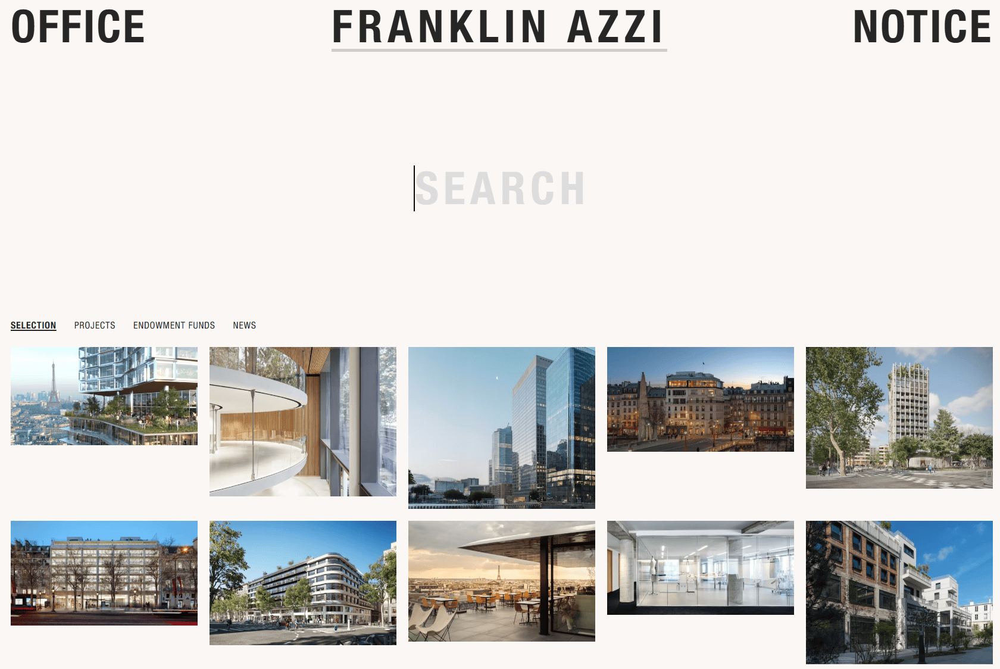

Сайт 023 · Многостраничный · Недвижимость и архитектура
Franklin Azzi
22 место в чемпионате · 73.5 / 100
Screens/023.png, доминирующий цвет занимает 65% кадра.Что это
Сайт парижского архитектурного бюро Franklin Azzi — каталог проектов с плотной сеткой карточек, крупной типографикой Helvetica и гигантским поисковым полем вместо привычного заголовка. Внутри больше полутора сотен проектов, разделы о бюро, новости, публикации, команда, вакансии и фонд целевого капитала. Технически это Next.js поверх headless-системы управления контентом: данные приходят по GraphQL, изображения раздаёт imgix с автоконвертацией в AVIF и лестницей ширин, а поиск и фасетные фильтры работают на Algolia с состоянием в адресной строке.
Описание владельца коллекции: Наглядный информативный сайт парижского архитектурного бюро. Удобная раскладка карточек, хорошее разрешение фотографий и быстрый отклик. Идеальный формат для портфолио.
Чем интересен
- Главная отдаёт практически пустое основное содержимое: сетка проектов монтируется на клиенте, а данные лежат в потоке серверных компонентов внутри служебных script-тегов — без JavaScript карточек не увидеть, тогда как страницы проектов приходят полностью отрендеренными.
- Изображения отдаются через imgix с лестницей ширин до 4040 и параметром автоматического формата: при поддержке AVIF клиент получает файл на 52 килобайта вместо исходных 1,76 мегабайта, с кэшем на год.
- Каталог построен на Algolia, а не на серверной выборке, причём индексы названы staging — то есть продакшн-сайт обращается к промежуточным индексам; в бандле остался незаменённый плейсхолдер адреса imgix.
- Визуальный язык держится на двух цветах и двух начертаниях Helvetica, а главный акцент — поиск: надпись капсом в 7,6rem с мигающей двухпиксельной кареткой вместо обычного поля ввода.
- Вместо кастомного курсора — тёмная подпись, следующая за мышью: она фиксирована в углу экрана и переворачивается у правого края.
- О доступности движения не подумали: медиазапроса на «уменьшение движения» в стилях нет, хотя объявлено почти девяносто переходов.
- Сайт двуязычный: в подвале есть переключатель английского и французского, но французские адреса по ожидаемой схеме отвечают 404 — рабочие адреса объявлены только в карте сайта.
Все 30 номинаций сайта
Итог: 73.5 / 100 по профилю «Промо, культура, иммерсив». Первых мест в критериях: 7 (единолично 1, разделено 6), призовых мест: 11. Строки отсортированы по месту в номинации, ссылка ведёт к номинации в чемпионате.
- Соответствие бренду и ЦА
- Целостность
- Релевантность и полнота
- Актуальность
- Прозрачность
- Адаптивность
- Работа форм и поиска
- Экспертность
- Попадание в номинацию
- Полнота реализации
- Социальная ответственность
- Эстетика и оригинальность
- Удобство интерфейса
- Соответствие заявленному
- Интеграции
- Мультимедийность
- Уникальность и экспертность
- Грамотность
- Безопасность
- Интуитивность навигации
- Читабельность
- Отзывы и рейтинги
- SEO-оптимизация
- Доступность (a11y)
- Инновационность в дизайне
- Стабильность
- Современные технологии
- Уникальность предложения
- Интерактивные элементы
- Креативность в решении задач
Обоснования по разделам
- Юзабилити и UX
- Фиксированная шапка, переключатель языка и фасетные фильтры сделаны аккуратно, но французская локаль по ожидаемым адресам отвечает 404, а в подвале нет ни адреса, ни телефона.
- Дизайн и визуальное восприятие
- Тёплый минимализм на двух цветах и одной гарнитуре Helvetica: плотная сетка карточек без рамок и теней, а главный акцент — гигантское поле поиска с мигающей кареткой.
- Контент
- Больше полутора сотен проектов, разделы о бюро, новости, публикации, команда, вакансии и фонд целевого капитала; мета-описание — сплошной абзац на 491 знак.
- Техническое качество
- Next.js с серверными компонентами поверх headless-системы управления, imgix с автоконвертацией и Algolia; при этом привычные адреса карты сайта отвечают ошибкой 500, а сетка на главной монтируется на клиенте.
- Функциональность и интерактивность
- Поиск и фасеты на Algolia с состоянием в адресной строке, изображения с лестницей ширин и ленивой подстановкой размытых превью; форм на сайте нет.
- Доверие и репутация
- Юридическая страница образцовая: юрлицо, капитал, регистрационный номер, SIRET, VAT, номер в реестре архитекторов и хостинг; отзывов и рейтингов при этом нет.
- Инновации и технологичность
- Стек современный, но не экспериментальный: серверные компоненты, headless CMS и imgix — ставка на скорость и качество фотографий, а не на эффекты.
- Соответствие категории и целям
- Как формат портфолио работает идеально: понятная раскладка карточек, крупные фотографии и поиск по проектам; юридическая часть тоже на месте.
Что не проверено
- Браузер не запускался: живое наведение, реальные анимации и фактическое число карточек в строке на конкретной ширине окна не наблюдались — выводы сделаны по разметке, стилям и чанкам.
- Наличие или отсутствие звука не подтверждено: следов в разметке и стилях нет, но полное отсутствие не доказано.
- Ключ Algolia найден в бандле, но запросы к API сознательно не выполнялись, поэтому реальная выдача поиска и содержимое индексов staging не проверены.
- Французская локаль по существу не проверена: корень перенаправляет на английскую версию, а французские адреса по ожидаемой схеме отвечают 404.
- Конкретный адрес GraphQL-эндпоинта из конфигурации не проверялся; корень служебного хоста отвечает 404, что для сервера API ожидаемо.
- Один из файлов стилей, подключаемый на странице новостей, не выгружался, поэтому определение класса, скрывающего заголовок первого уровня, не подтверждено.
- Полнота каталога: 157 адресов взяты из карты сайта, фактическая выдача на главной может ограничиваться настройками поискового индекса — это не проверялось.
- Разметка снята HTTP-запросами, а не браузером, поэтому вычисленные стили, размеры отрисовки и сетевые запросы браузера отсутствуют.
- Точное число адресов в индексе карты сайта не установлено: файл не сохранялся, видно не менее шестнадцати записей.
- Соответствие скриншота 023.png текущему состоянию сайта не проверялось, дата снимка неизвестна.
Паспорт
- Домен
- franklinazzi.fr
- Тип сайта
- Многостраничный
- Категории
- Недвижимость и архитектура
- Подкатегории
- Архбюро
- Для кого
- Архитекторам, Дизайнерам, Агентствам
- Стиль
- Швейцарская типографика, Минимализм
- Приёмы
- Микроанимации
- Технологии
- Next.js с App Router, React и серверные компоненты, CSS Modules, Локальные шрифты через next/font, Headless-система управления на Craft CMS, GraphQL, Algolia InstantSearch, imgix как CDN изображений, Plausible Analytics, Хостинг DigitalOcean
- Язык
- Мультиязычный
- Страна
- Франция, Париж — на странице контактов указан адрес 13 rue d'Uzès, 75002 Paris, а на странице юридической информации — регистрация R.C.S. Paris и номер в национальном реестре архитекторов
- Автор
- бюро Franklin Azzi Architecture (SAS d'architecture); разработчик сайта в разметке не указан
- Год
- 2005
- Добавлен
- 2026-10-02
Палитра
- #FAF7F4 — 65% кадра
- #272827 — 6% кадра
- #CDCFD1 — 6% кадра
- #A5B2B9 — 5% кадра
- #534C45 — 5% кадра
измерено из Screens/023.png (тёплый светлый фон занимает 65% кадра, графит 6%); токены сайта: фон #faf7f4 и текст #262626 — совпали с измеренными
- Режим
- Светлая
- Цвет фона
- Нейтральный
Чемпионат
22 место из 31 · 73.5 / 100 · первых мест 7 из 30 · сильнее всего: Соответствие бренду и ЦА (1 место)
- Адаптивность — 1 место, 8 баллов
- Соответствие бренду и ЦА — 1 место, 9 баллов
- Целостность — 1 место, 9 баллов
- Релевантность и полнота — 1 место, 9 баллов
- Актуальность — 1 место, 9 баллов
- Работа форм и поиска — 1 место, 8 баллов
- Прозрачность — 1 место, 9 баллов
Технические факты
- HTTPS
- да
- Meta viewport
- да
- Title
- Franklin Azzi (13 симв.)
- Description
- We are an architecture, interior design, object design agency and an endowment fund dedicated to contemporary art. We are committed to a timeless elegance marked by rationality, sobriety and attention to detail, creating architecture to be experienced, felt and contemplated. Free and cosmopolitan in the way we blend influences and disciplines - architecture, object, the arts and science - precise and rigorous in our conceptual approach, our signature embodies an iconoclastic minimalism. (491 симв.)
- Open Graph
- да
- Структурированные данные
- нет
- Sitemap
- индекс на 16 с лишним дочерних карт, включая карту из 157 проектов; при этом привычные /sitemap.xml и /sitemap_index.xml отвечают ошибкой 500
- Robots
- есть: запрет служебных каталогов системы управления и две директивы sitemap на индексы локалей
- Аналитика
- Plausible Analytics
- Проверено ссылок
- 18
- Битые ссылки
- /fr/office — 404, французская локаль по этой схеме недоступна
/sitemap.xml — 500
/sitemap_index.xml — 500
admin.franklinazzi.fr — 404 на корне (ожидаемо для сервера API, сам эндпоинт не проверялся) - Контакты
- адрес бюро, телефон и общий ящик на странице контактов, плюс отдельные адреса для коммуникаций, найма, тендеров и выставок; в подвале контактов нет, только ссылки и соцсети Instagram и LinkedIn
- Юридическая информация
- страница юридической информации с полным набором: SAS d'architecture с капиталом, R.C.S. Paris, SIRET, код деятельности, VAT, номер в реестре архитекторов, хостинг DigitalOcean; там же разделы об авторских правах, персональном использовании, исключениях и cookie; знак охраны прав указан как 2005–2025
Технологии с доказательствами
- Next.js с App Router — цепочка чанков сборки приложения с сегментом локали, поток серверных компонентов в разметке, идентификатор сборки и стили с атрибутом порядка
- React и серверные компоненты — в потоке данных видны ссылки на клиентские модули и гидратация; страницы проектов приходят полностью отрендеренными
- CSS Modules — хешированные имена классов вида ProjectsGrid_root, Feature_title, MediaGrid_gridItem в разметке и стилях
- Локальные шрифты через next/font — переменные классы на html и правила @font-face с файлами woff2 из сборки: Helvetica и Helvetica Condensed с запасным Arial
- Headless-система управления на Craft CMS — robots закрывает служебные каталоги cpresources и vendor, структура карты сайта вида sitemaps-1-section-allProjects-1-sitemap.xml, в данных проектов поля focalPoint, blurhash и kind
- GraphQL — в клиентской конфигурации указан адрес admin.franklinazzi.fr
- Algolia InstantSearch — в чанке поиска лежат instantsearch, algoliasearch и обращение к фасетам; в конфигурации идентификатор приложения и имена индексов staging_en, staging_fr, staging_en_sort, staging_titles_en
- imgix как CDN изображений — сервер ответа imgix, все картинки и og-изображение указывают на franklinazzi.imgix.net, в коде собирается адрес с параметрами auto=format,compress и шириной
- Plausible Analytics — предзагрузка и подключение скрипта с доменом franklinazzi.fr
- Хостинг DigitalOcean — указан текстом на странице юридической информации
Что смотреть в первую очередь
Смотреть как образцовый каталог-портфолио: плотная сетка карточек на auto-fill, изображения через imgix с автоконвертацией и лестницей ширин, поиск и фасеты на Algolia с состоянием в адресе — и при этом вся выразительность построена на двух цветах, одной гарнитуре и гигантском поле поиска.
Похожие в коллекции
- Gridset — общее: Швейцарская типографика, Минимализм, Микроанимации
- WeekSync — общее: Минимализм, Микроанимации
- Tinloof — общее: Минимализм, Микроанимации
- Joshua Baker — общее: Минимализм, Микроанимации